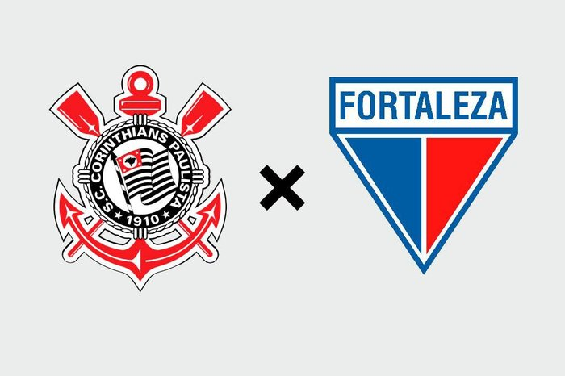

Corinthians X Fortaleza

Com o início do pregão, os ativos comercializados na bolsa brasileira tiveram, em média, valorização bruta de serca 0,34%, isso com apenas 1 hora desde a abertura da bolsa. Analistas acreditam que a tarde de hoje será grandioza, marcada pela negciação de gigantescos lotes de ações, dos mais diversos ativos.

Muito comentado nas ultimas semanas por influencer do setor gastronomico, o chef patciê Cedric Grolet visita o Brasil, São Paulo, para uma possivel abertura de sua confeitaria no bairro Jardins, em um região conhecida pelos paulista pela forte precença de vertentes da culinaria europeia.